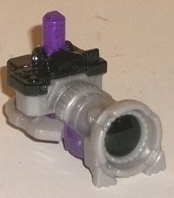
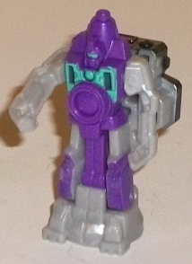
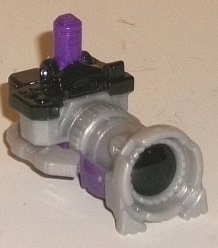
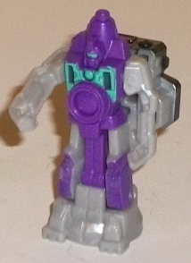
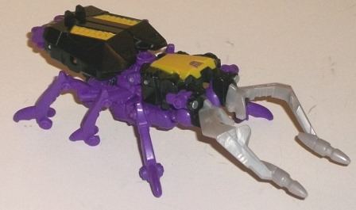
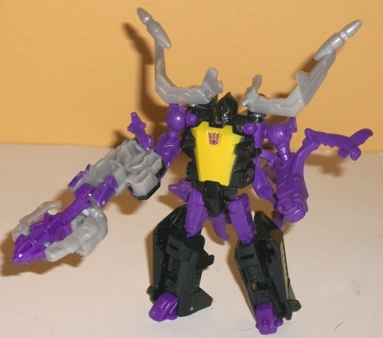

 
Difficulty of Transformations : Very Easy
Color Scheme : Light milky gray, purple, black, and some moderately light teal
Individual Rating : 5.2
Allegiances
: Decepticon
Size
: Legends 2-pack
 Reflector
Reflector


Difficulty of Transformations
: Very
Easy
Color Scheme
: Light milky gray,
purple, black, and some moderately light teal
Individual Rating
: 5.2
Reflector's vehicle mode
is a camera, in homage to his original G1 self, though his original G1
self in the cartoon had three identical-looking robots, whereas this is
just one robot. Anyways, this is a more "old-style"-- or high-end-- camera,
with a pretty substantial lens apparatus and a boxy feel at the back. There's
two odd flat areas at the sides that are obviously the robot arms, and
a little bump at the back end that is Reflector's head, but other than
these bits this is a pretty solid mode. The mold has some pretty intricate
detailing for a toy of this tiny size, including little lines around the
"lens" to look like it can be rotated and various tiny little buttons molded
into the top. The color scheme is pretty close to G1 Reflectors, being
primarily a mix of black, gray, and purple (with the purple more prevalent
in the robot mode, given that purple isn't exactly an appropriate color
for a camera. The purple is also a bit more reddish-violet than it shows
up in these pictures, both for Reflector and Skrapnel). This said, the
light gray is that awful blah milky gray that I wish Hasbro would replace
with a more metallic-looking shade. There's a bit of black paint on the
top and lens, but it seems like more of this mode should have been black,
particularly the middle section. There's a small 5mm peg on the top for
other compatible robots to hold this mode in their fists, but for this
mode it's oddly placed-- they either have to hold the camera upside-down
or have it hanging out the bottom of their fists.
Reflector's weapon mode
(see Skrapnel's pics below) is done by flipping up the lens piece and flipping
his 5mm peg down, the former of which automatically elongates the mold
and makes it look like a fairly indistinct gun with a purple tip at the
end. There's so many hollow parts visible in this mode, though, that I
definitely consider it the weakest of Reflector's three modes-- it doesn't
look like a "solid" gun for the most part, and the entire front section
is too obviously something else (either the camera lens or the upper part
of the robot mode, depending upon what piece you're talking about). Again,
the light milky gray is a bit too prevalent in this mode as well. On the
upside, the 5mm peg is so far back on the toy that even smaller figures
should have no problem holding him while also keeping their shoulders bent.
Reflector's robot mode
is literally his camera mode standing up on the lens. Thus, most of his
robot bits are simply detailed on the underside of said camera mode, though
the detailing that is there looks pretty good for the most part, particularly
his chest with the fake lense "stomach" and the faceplated, visored head
which is a nice, crisp sculpt. He's got a big "uni-leg", as do most toys
this tiny, but the leg detailing is fairly obvious. The arms are probably
the weakest part of this mode, being overly flat and having the arm and
fist mold detailing waaay in there and pretty tiny even considering the
size of the figure. (His articulation is back-and-forth at the shoulders
and nowhere else; pretty standard for this size.) A bit of teal has been
added to this mode on Reflector's chest and visor, and it contrasts excellently
with the purple; no complaints here, other than that I wish it had been
used just a bit more elsewhere on the figure.
Reflector is slightly
above-average for the smaller figures in these Legends 2-packs. His camera
mode is quite nice, and for the size his robot mode looks alright too (yes
it's mostly just a bunch of detailing on the underside of the camera mode,
but this is to be expected at this scale). It's his overly hollow, indistinct
weapon mode that's a bit of a drag on his overall score.
 Skrapnel
Skrapnel


Difficulty of Transformation
: Easy
Color Scheme
: Black, Moderately
purple, and some light milky gray, silver and yellow
Individual Rating
: 9.1
"Skrapnel" is the new
name for the G1 Insecticon Shrapnel, also formerly known as Sharpshot--
I like the Skrapnel name MUCH better, not so much because it's closer to
his G1 name than that it just sounds cooler. Anyways, Skrapnel's alternate
mode is a robotic stag beetle. The proportions in this mode are surprisingly
solid for a Legends-size figure-- the "horns" may be a bit oversized, but
this was likely intentional and makes him look fiercer besides. His robot
feet do stick out a bit from the back end, but this is really the only
obvious robot mode extra in this mode; if you look at him from a more side-on
view, his robot arms stick out a bit from the bottom, but not that much
and are hidden in most angles-- I consider this latter extra a pretty minor
one. Skrapnel's mold detailing is a bit simplistic for an insect, but it
fits his
original toy
and the "needed"
molded details are still present here anyways, like the molded-in "hinges"
on his insect legs, gun-like protrusions at the end of his jaws, and vents
along his upper back. Sadly, though, all three of Skrapnel's insect legs
on one side are one single piece, and don't really move except for transformation,
so no individually posing them-- all you can really do in terms of posability
here are rotate the jaws in and out. Skrapnel's color scheme is your traditional
G1 Insecticon scheme, with black, purple, and yellow being the dominant
colors-- all of which are quite Decepticon-y and contrast against each
other quite well. (I wish the yellow was a bit more goldish in its shade,
though.) The G1 toy's chrome is a light milky gray on this toy, which I
find a definite downgrade given how boring this shade of gray is, but at
least it doesn't really show up beyond his jaws. Skrapnel has a 5mm port
in the middle of the top of his body in this mode to mount compatible weapons
and TFs there.
Skrapnel's transformation
is a bit more complex than you'd think for a Legend-- it's certainly not
difficult, but there are a few unexpected steps to the point where it just
barely doesn't qualify as a "medium" level of difficulty to me-- you've
got to think just a little outside the box. His legs in particular transform
in an interesting manner, with the tops folding to the sides before the
feet rotate outward. Having his entire upper robot body fold down to reveal
the head is also a nice touch. In this mode, Skrapnel's proportions are
quite spot-on still; his fists are a bit large, but this can be chalked
up to him needing to hold 5mm peg-compatible weapons. His insect legs are
a bit in the way, though, particularly the four on his lower back, which
can get in the way of elbow movement in particular-- I wish the legs could
have folded back a bit more. The jaws, on the other hand, complement his
shoulders and are sort of Skrapnel's signature thing, so I don't mind them
here. The headsculpt is remarkably crisp for such a small scale, with the
visor and mouth both painted silver. However, beyond this and his chest,
Skrapnel is bereft of paint apps in this mode. By and large, the breakup
of his purple and black keeps him from being TOO one-tone in most areas,
but some paint apps on his lower arms and/or lower legs would've been appreciated.
Skrapnel can move at the neck, shoulders (at two points), elbows, hips,
knees, and slightly at the ankles. He's also fairly stable and most of
these joints are ball joints, so he's quite poseable, particularly for
the size class.
Skrapnel is one of the
best Legends molds released in the "Thrilling 30" line of Generations,
looking quite good in both modes and having a satisfying (but not too complex)
transformation that's quite interesting even on a smaller toy like this.
He's also got good articulation and proportions-- his only real downsides
are his protruding insect legs in robot mode, lack of articulation in insect
mode, and that he could've used a few more paint apps.
The Skrapnel w/ Reflector set is a pretty solid Legends 2-pack, particularly because of Skrapnel. The Insecticon Legends class is a really interesting, well-put together toy in both modes with good proportions and robot articulation to boot and only a few minor kibble issues. Reflector isn't quite as strong-- even considering the smaller size-- but he's still got solid robot and camera modes, at least. Highly recommended.
Review by Beastbot